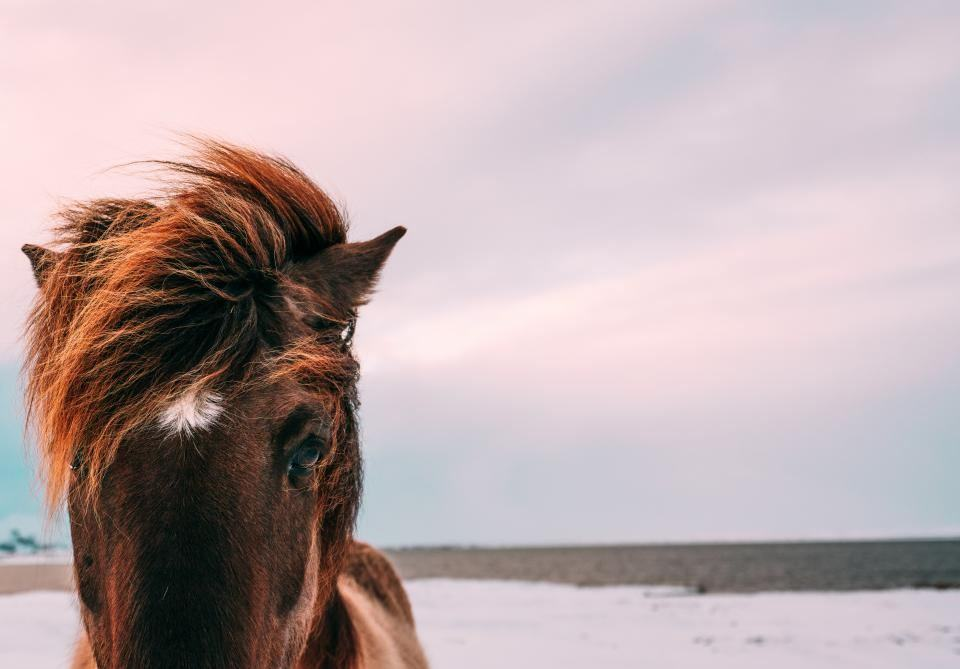
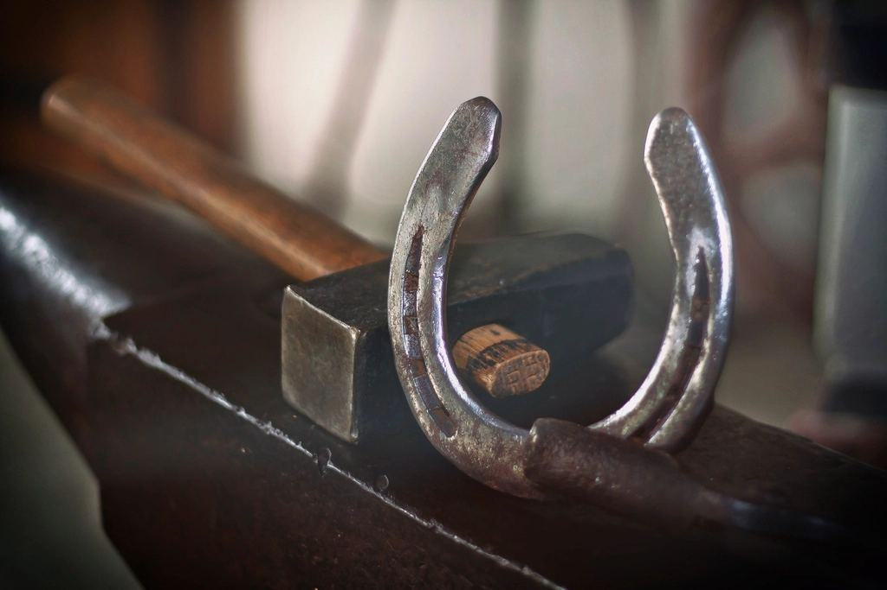
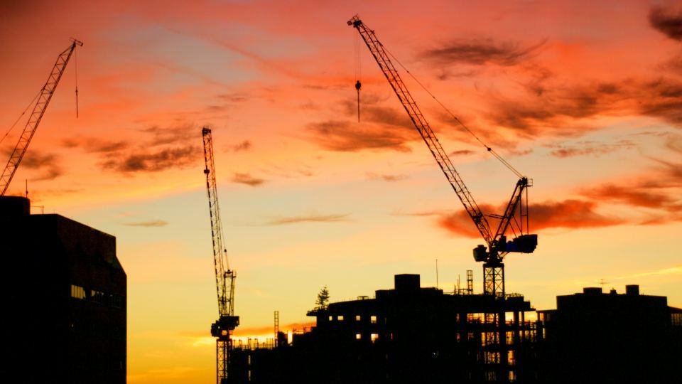
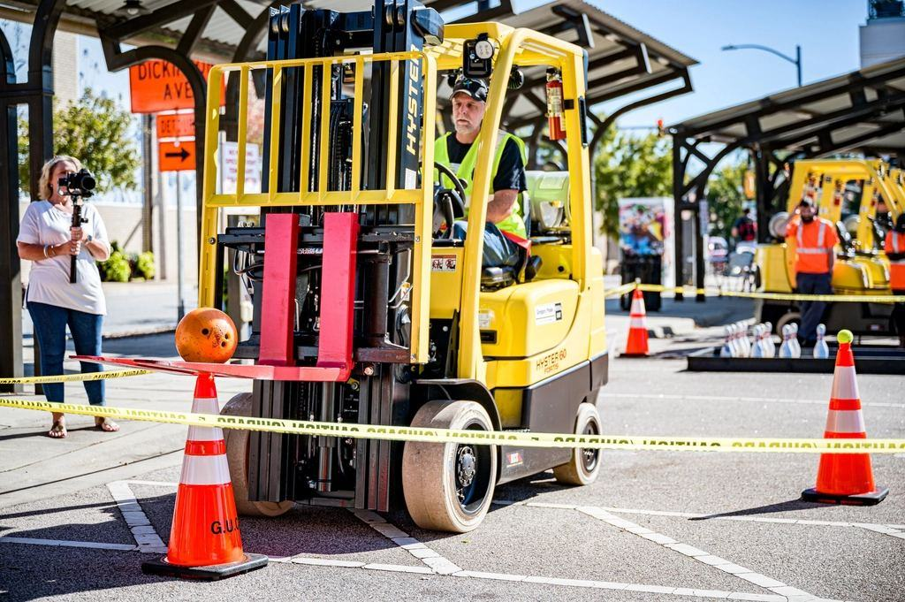

Referenser
Ett urval av uppdrag vi har utfört.
- 2025

Skörden i Kvibille
Fem teleskoplastare under åtta veckor för fyra mjölkgårdar.
- 2025

Ridcentret i Steninge
Tre utebanor och ett ridhus hyvlade och laserjusterade.
- 2024

Hagar i Simlångsdalen
Fyra kilometer hägn med stolpdrivare på minilastare.
- 2025

Svinstall i Eldsberga
Teleskoplastare med grip under ombyggnaden av gödselplattan.
- 2024

Grönsaksodling i Harplinge
Två minilastare i packhallen under hela odlingssäsongen.
- 2026

Vinterstall i Getinge
Eldriven minilastare för utgödsling från november till april.
Kunderna om oss
Lantbrukare och hästfolk
”Vi hyr teleskoplastare åtta veckor varje sommar i stället för att köpa en andra. Det har sparat oss en halv miljon på sex år.”
Sofia L. · Getinge”Minilastaren gick in i alla våra boxar och var så tyst att hästarna inte ens tittade upp.”
Charlotte E. · Steninge”Ridbanorna var hyvlade två dagar före tävlingen och höll hela helgen.”